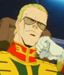
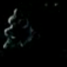

Pezun Pezun
Side 4 Asteroid Fortress Killing Situated on the far end of Zeons defense line at Side 1, Pezun is a smaller asteroid than Solomon, oddly shaped and originally slated for research and development. However, it has still been moved to the front lines to assist in Zeons defense. It is home to the secretive "Pezun Project", and designs mobile suits much different than those made by Zimmad or Zeonic.  Colonal Killing A mean spirited and devious member of the SS, Killing is one of Ghirens most trusted lackies, capable of doing anything for his fuehrer at a moments notice. Killing has been trusted with the defense of Pezun, and overlooks both it and the Pezun Project with a frighteningly evil resolve. Pezun  |